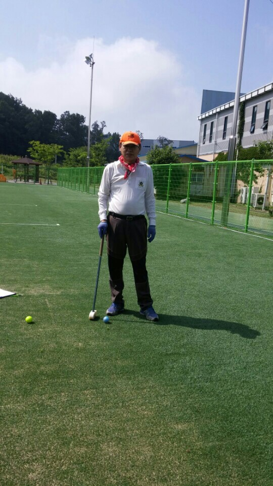
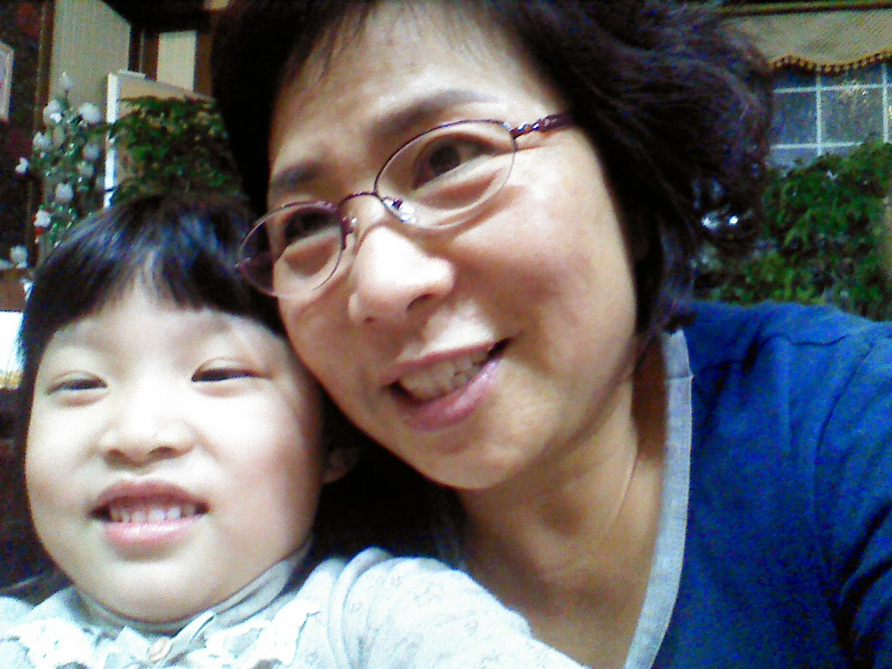
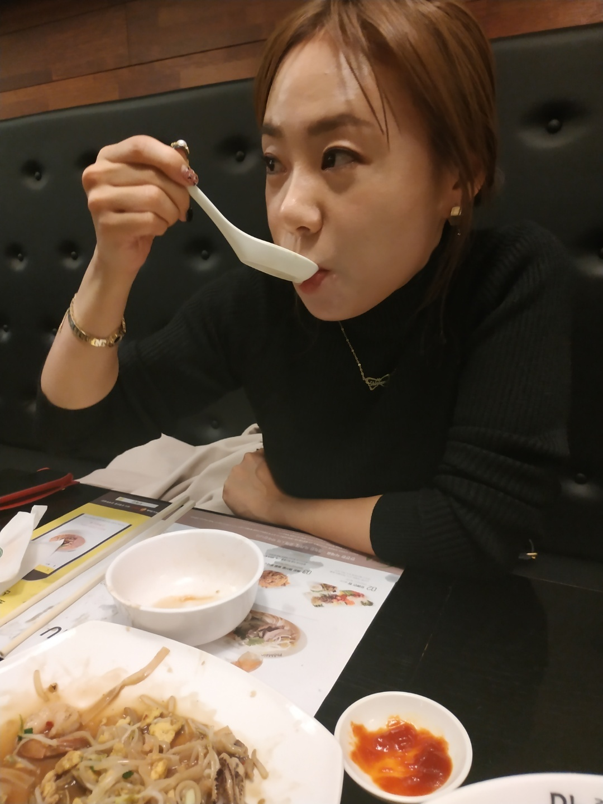
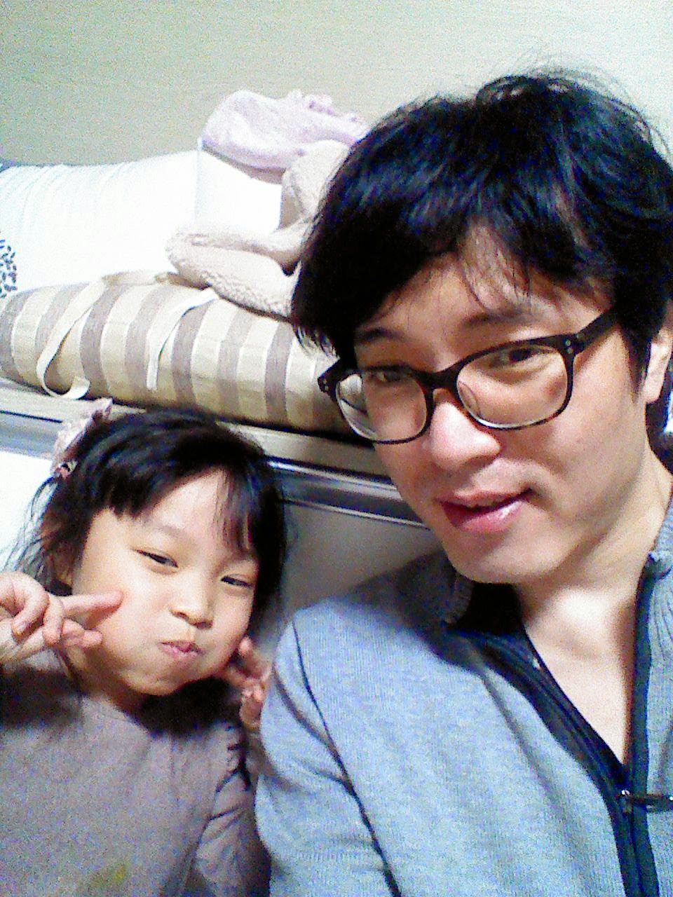
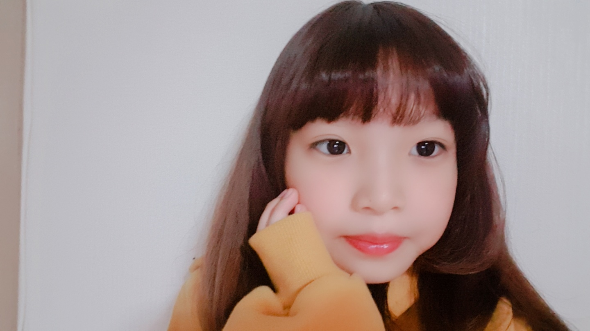
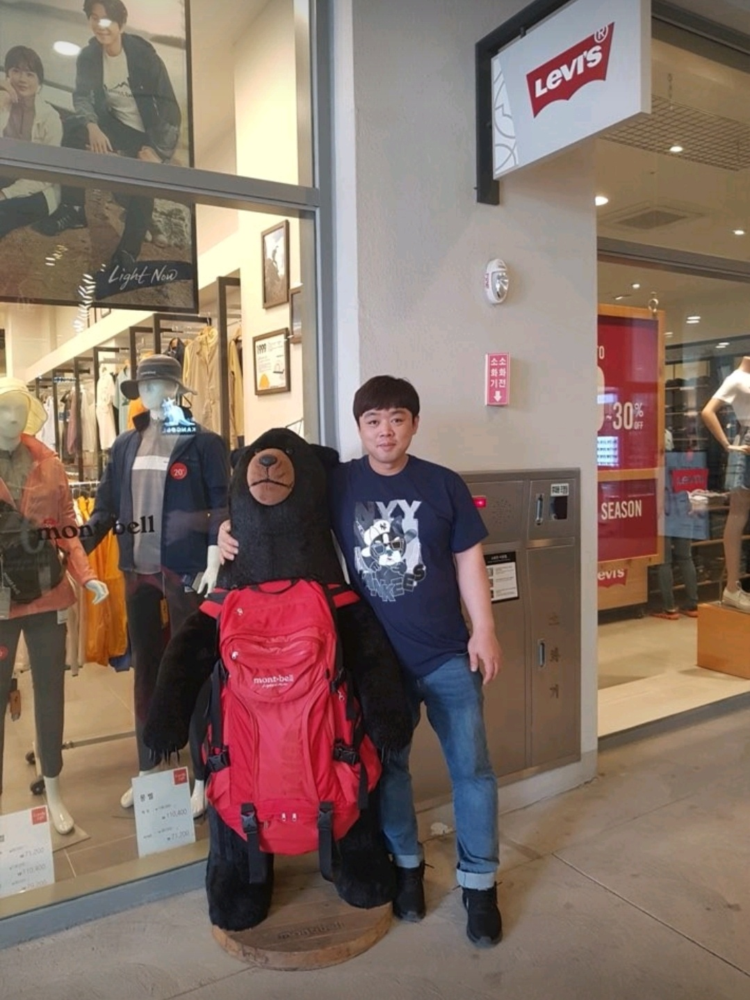
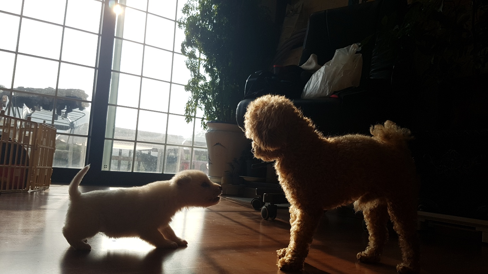
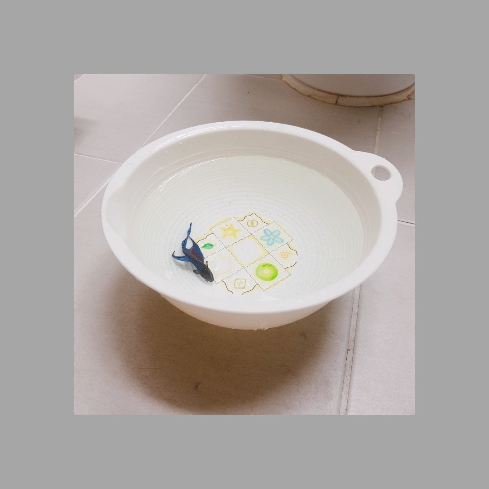

우리가족을 소개합니다.
할아버지(신상호): 동네 이장이시고 2층 집에서 할머니와 사신다. 골프치는 것을 좋아하신다.
할머니(이혜경): 농장을 지으시고 할아버지와 같이 사신다.
엄마(신지나): 화장품 파는 일을 하고 옷 코디를 잘한다.
아빠(김정훈): 자동차 파는 일을 하고 인터넷(스마트폰, 컴퓨터)를/을 잘한다.
나(김리현): 학생이고 그림, 춤을 취미로하고있다.
삼촌(신정엽): 강아지를 좋아하고 게임을 많이한다.
모카, 모리:강아지이고 모카는 갈색이다. 종류는 푸들이다. 모리는 흰색 대형견 아가이다.
셀로: 물고기이고 키운지 2년 반이 되었다.